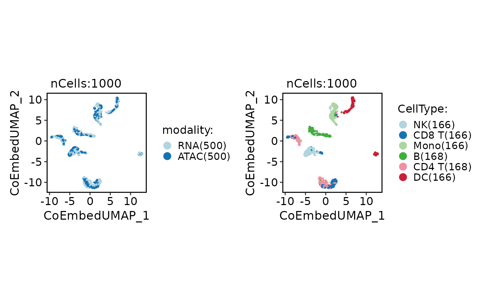

Impute reference expression into query cells with TransferData, merge
reference and query cells, and compute PCA/UMAP on the shared expression
space. The current implementation mirrors the Seurat ATAC integration
vignette for ATAC query and RNA reference.
Usage
RunCoEmbedding(
srt,
reference,
assay = NULL,
reference_assay = NULL,
reference_reduction = "pca",
reference_dims = 1:30,
gene_activity_assay = "ACTIVITY",
weight_reduction = NULL,
dims = 2:30,
genes_use = NULL,
imputed_assay = "RNA",
modality_col = "modality",
coembed_prefix = "CoEmbed",
npcs = 30,
umap_dims = 1:30,
k.weight = 100,
verbose = TRUE,
seed = 11
)Arguments
- srt
A Seurat object.
- reference
RNA reference
Seuratobject used for label transfer.- assay
Which assay to use. If
NULL, the default assay of the Seurat object will be used. When the object also containsChromatinAssay, the default assay and additionalChromatinAssaywill be preprocessed sequentially.- reference_assay
Assay used in the reference object.
- reference_reduction
Reduction used in the reference object.
- reference_dims
Dimensions used from the reference reduction.
- gene_activity_assay
Name of the gene activity assay used for mapping.
- weight_reduction
Reduction in
srtused to weight transferred labels. IfNULL, an ATAC linear reduction is resolved automatically fromATAC_default_linear_reduction,{prefix}lsi,{prefix}svd, or the current default reduction.- dims
Query reduction dimensions used by
TransferData.- genes_use
Genes/features used for expression imputation and co-embedding. If
NULL, reference variable features are used.- imputed_assay
Assay name for imputed RNA expression in ATAC cells.
- modality_col
Metadata column storing RNA/ATAC origin after merge.
- coembed_prefix
Prefix for co-embedding reductions.
- npcs
Number of PCs to compute.
- umap_dims
PC dimensions used for UMAP.
- k.weight
Number of neighbors used when weighting transfer anchors.
- verbose
Whether to print the message. Default is
TRUE.- seed
Random seed used for UMAP.
Examples
data(pbmcmultiome_sub)
pbmcmultiome_sub <- standard_scop(
pbmcmultiome_sub,
assay = c("RNA", "peaks"),
linear_reduction_dims = 20
)
#> ℹ [2026-05-14 07:00:43] Start standard processing workflow...
#> ℹ [2026-05-14 07:00:44] Auto preprocess assays: "RNA" and "peaks"
#> ℹ [2026-05-14 07:00:44] Start standard processing workflow...
#> ℹ [2026-05-14 07:00:44] Checking a list of <Seurat>...
#> ! [2026-05-14 07:00:44] Data 1/1 of the `srt_list` is "unknown"
#> ℹ [2026-05-14 07:00:44] Perform `NormalizeData()` with `normalization.method = 'LogNormalize'` on 1/1 of `srt_list`...
#> ℹ [2026-05-14 07:00:45] Perform `Seurat::FindVariableFeatures()` on 1/1 of `srt_list`...
#> Warning: pseudoinverse used at -2.3979
#> Warning: neighborhood radius 0.30103
#> Warning: reciprocal condition number 1.2589e-15
#> ℹ [2026-05-14 07:00:46] Use the separate HVF from `srt_list`
#> ℹ [2026-05-14 07:00:46] Number of available HVF: 2000
#> ℹ [2026-05-14 07:00:46] Finished check
#> ℹ [2026-05-14 07:00:46] Perform `Seurat::ScaleData()`
#> ℹ [2026-05-14 07:00:47] Perform pca linear dimension reduction
#> ℹ [2026-05-14 07:00:47] Use stored estimated dimensions 1:20 for RNApca
#> ℹ [2026-05-14 07:00:47] Perform `Seurat::FindClusters()` with `cluster_algorithm = 'louvain'` and `cluster_resolution = 0.6`
#> ℹ [2026-05-14 07:00:47] Reorder clusters...
#> ℹ [2026-05-14 07:00:47] Skip `log1p()` because `layer = data` is not "counts"
#> ℹ [2026-05-14 07:00:47] Perform umap nonlinear dimension reduction
#> ℹ [2026-05-14 07:00:47] Perform umap nonlinear dimension reduction using RNApca (1:20)
#> ℹ [2026-05-14 07:00:52] Perform umap nonlinear dimension reduction using RNApca (1:20)
#> ✔ [2026-05-14 07:00:57] Standard processing workflow completed
#> ℹ [2026-05-14 07:00:57] Start standard processing workflow...
#> ℹ [2026-05-14 07:00:57] Checking a list of <Seurat>...
#> ! [2026-05-14 07:00:58] Data 1/1 of the `srt_list` is "raw_counts"
#> ℹ [2026-05-14 07:00:58] Perform `RunTFIDF()` on 1/1 of `srt_list`...
#> ℹ [2026-05-14 07:00:58] Perform `FindTopFeatures()` on 1/1 of `srt_list`...
#> ℹ [2026-05-14 07:00:58] Use the separate HVF from `srt_list`
#> ℹ [2026-05-14 07:00:58] Number of available HVF: 11413
#> ℹ [2026-05-14 07:00:58] Finished check
#> ℹ [2026-05-14 07:00:58] `normalization_method` is TFIDF. Use lsi workflow
#> ℹ [2026-05-14 07:00:58] Perform svd linear dimension reduction
#> Running SVD
#> Scaling cell embeddings
#> ℹ [2026-05-14 07:00:59] Perform `Seurat::FindClusters()` with `cluster_algorithm = 'louvain'` and `cluster_resolution = 0.6`
#> ℹ [2026-05-14 07:00:59] Reorder clusters...
#> ℹ [2026-05-14 07:00:59] Skip `log1p()` because `layer = data` is not "counts"
#> ℹ [2026-05-14 07:00:59] Perform umap nonlinear dimension reduction
#> ℹ [2026-05-14 07:00:59] Perform umap nonlinear dimension reduction using ATACsvd (2:30)
#> ℹ [2026-05-14 07:01:04] Perform umap nonlinear dimension reduction using ATACsvd (2:30)
#> ✔ [2026-05-14 07:01:09] Standard processing workflow completed
coembed <- RunCoEmbedding(
srt = pbmcmultiome_sub,
reference = pbmcmultiome_sub,
assay = "peaks",
reference_assay = "RNA",
gene_activity_assay = "RNA",
reference_reduction = "RNApca",
reference_dims = 1:10,
dims = 2:10,
umap_dims = 1:10
)
#> ℹ [2026-05-14 07:01:09] Use "ATAClsi" as the ATAC weight reduction
#> ℹ [2026-05-14 07:01:09] Finding RNA-to-ATAC transfer anchors...
#> ℹ [2026-05-14 07:01:13] Imputing RNA expression into ATAC cells...
#> Warning: Assay RNA changing from Assay5 to Assay
#> Warning: Different cells and/or features from existing assay RNA
#> Warning: Layer counts isn't present in the assay object; returning NULL
#> Warning: Some cell names are duplicated across objects provided. Renaming to enforce unique cell names.
#> Warning: The default method for RunUMAP has changed from calling Python UMAP via reticulate to the R-native UWOT using the cosine metric
#> To use Python UMAP via reticulate, set umap.method to 'umap-learn' and metric to 'correlation'
#> This message will be shown once per session
CellDimPlot(
coembed,
group.by = c("modality", "CellType"),
xlab = "CoEmbedUMAP_1",
ylab = "CoEmbedUMAP_2"
)
